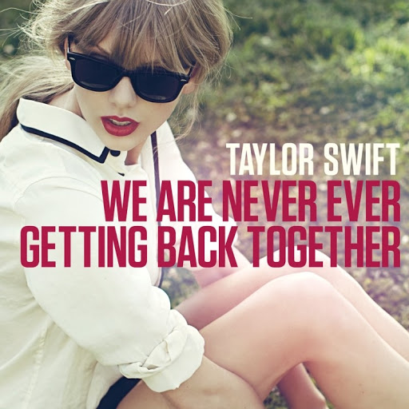
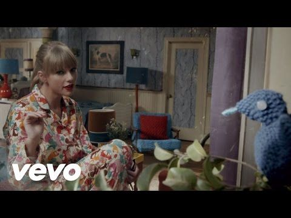

- 간단한 소개
- 대표곡 및 추천곡
-대표곡-

We Never Ever Getting Back Together
4집 앨범 'Red'의 8번 트랙으로 테일러의 싱글 중 처음으로 빌보드 핫 100 1위를 차지했다.
(유튜브 링크: https://www.youtube.com/watch?v=WA4iX5D9Z64)

Shake It Off
5집 앨범 '1989'의 6번 트랙으로 2014년 9월 6일자 빌보드 차트에서 1위로 데뷔하며, 통산 22번째 핫샷 1위곡이자 그녀의 두 번째 1위곡이 되었다.
여러 기록을 세우고 엄청난 성적을 기록하며 팝으로의 성공적인 변신을 알렸다.
(유튜브 링크: https://www.youtube.com/watch?v=nfWlot6h_JM)
-추천곡-
Lover Story
2집 3번트랙 (유튜브 링크: https://www.youtube.com/watch?v=8xg3vE8Ie_E)
You Belong With Me
2집 6번트랙 (유튜브 링크: https://www.youtube.com/watch?v=VuNIsY6JdUw)
Speak Now
3집 4번트랙 (유튜브 링크: https://www.youtube.com/watch?v=MUXyRvTCNuU)
Enchanted
3집 9번트랙 (유튜브 링크: https://www.youtube.com/watch?v=vv3um0BlygY)
Red
4집 2번트랙 (유튜브 링크: https://www.youtube.com/watch?v=Zlot0i3Zykw)
22
4집 6번트랙 (유튜브 링크: https://www.youtube.com/watch?v=AgFeZr5ptV8)
Wildest Dreams
4집 9번트랙 (유튜브 링크: https://www.youtube.com/watch?v=IdneKLhsWOQ)
Clean
4집 13번트랙 (유튜브 링크: https://www.youtube.com/watch?v=GL-HyvAjbFw)